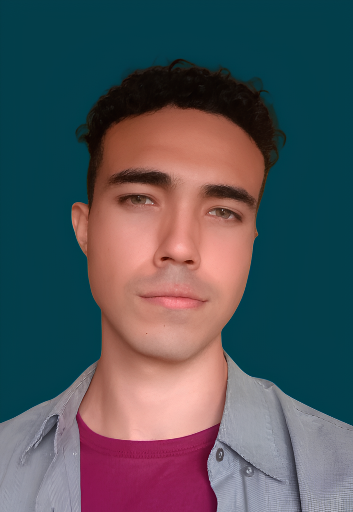
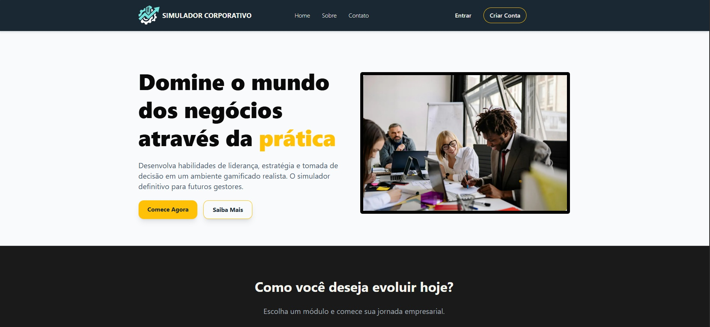
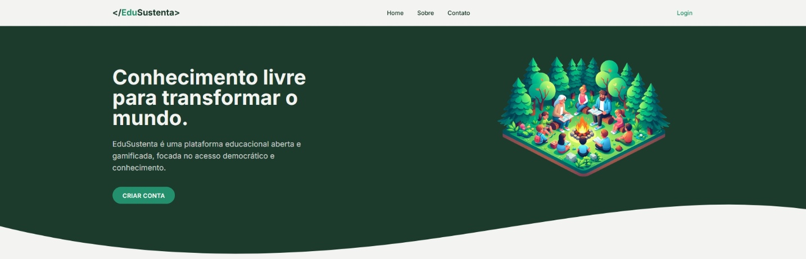

Graduando em Engenharia de Software e Desenvolvimento de Sistemas (IF Fluminense), com formação complementar em QA Testing. Profissional com visão híbrida, focado na interseção entre estratégia de produto (PO), análise de processos e a garantia da excelência técnica.


Desenvolvimento de um simulador de gestão focado em análise de mercado e controle estratégico de recursos. Integra mecânicas de negócio realistas, manuais de usuário detalhados e diagnósticos para suporte à tomada de decisão.

Desenvolvimento de um software focado em educação, estruturado através de trilhas de conhecimento interativas para facilitar o aprendizado contínuo e sustentável.
Estácio
GraduaçãoInstituto Federal Fluminense (IF)
TécnicoQualidade de Software e Automação de Testes
Especialização